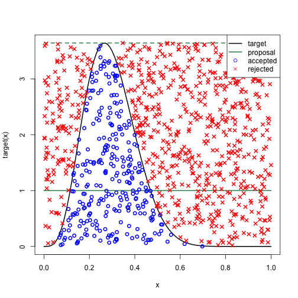

There are several algorithms for generating random variates based on different probability distributions. Some common distributions and their algorithms include:
Algorithm description and implementation in JavaScript.
function generateUniformRandom() {
return Math.random();
}
// Example usage
const uniformRandomNumber = generateUniformRandom();
console.log("Uniform Random Number:", uniformRandomNumber);
Algorithm details and code snippets in JavaScript.
function generateNormalRandom(mean, stdDev) {
const u1 = Math.random();
const u2 = Math.random();
const z0 = Math.sqrt(-2 * Math.log(u1)) * Math.cos(2 * Math.PI * u2);
return mean + stdDev * z0;
}
// Example usage
const mean = 0;
const stdDev = 1;
const normalRandomNumber = generateNormalRandom(mean, stdDev);
console.log("Normal Random Number:", normalRandomNumber);
Algorithm details and code snippets in JavaScript.
function generateExponentialRandom(lambda) {
return -Math.log(Math.random()) / lambda;
}
// Example usage
const lambda = 2;
const exponentialRandomNumber = generateExponentialRandom(lambda);
console.log("Exponential Random Number:", exponentialRandomNumber);
Algorithm details and code snippets in JavaScript.
function generatePoissonRandom(lambda) {
let k = 0;
let p = 1;
const L = Math.exp(-lambda);
do {
k++;
p *= Math.random();
} while (p > L);
return k - 1;
}
// Example usage
const poissonLambda = 3;
const poissonRandomNumber = generatePoissonRandom(poissonLambda);
console.log("Poisson Random Number:", poissonRandomNumber);
Algorithm details and code snippets in JavaScript.
function generateBinomialRandom(n, p) {
let x = 0;
for (let i = 0; i < n; i++) {
if (Math.random() < p) {
x++;
}
}
return x;
}
// Example usage
const binomialN = 5;
const binomialP = 0.5;
const binomialRandomNumber = generateBinomialRandom(binomialN, binomialP);
console.log("Binomial Random Number:", binomialRandomNumber);
The Inverse Transform method is a common technique for generating random variates from a given probability distribution function. It involves using the inverse of the cumulative distribution function (CDF) to transform uniformly distributed random numbers into variates following the desired distribution.
For the Exponential Distribution, the cumulative distribution function (CDF) is given by:
\[ F(x) = 1 - e^{-\lambda x} \]
To find the Inverse Transform, we solve for \( x \) in terms of \( u \), where \( u \) is a uniform random number between 0 and 1:
\[ u = 1 - e^{-\lambda x} \]
Now, solve for \( x \):
\[ e^{-\lambda x} = 1 - u \]
\[ -\lambda x = \ln(1 - u) \]
\[ x = -\frac{\ln(1 - u)}{\lambda} \]
So, the Inverse Transform for the Exponential Distribution is:
\[ F^{-1}(u) = -\frac{\ln(1 - u)}{\lambda} \]
This method provides a flexible and widely applicable approach to transforming uniform random variates into variates following the desired distribution and also generating random variates from various distributions.
The Acceptance-Rejection method is a technique used for generating random variates from a target distribution by comparing them with variates from a simpler distribution. The basic idea is to generate a candidate variate from a simple distribution and accept or reject it based on a comparison with the target distribution.
This method involves two key components:
Example implementation in JavaScript:

function acceptanceRejection(targetPDF, proposalPDF) {
let x;
do {
// Generate a candidate variate from the proposal distribution
x = generateProposalVariate();
// Generate a random number between 0 and 1
const u = Math.random();
// Compare the target and proposal distributions
if (u <= targetPDF(x) / (M * proposalPDF(x))) {
return x; // Accept the variate
}
// Reject the variate and repeat the process
} while (true);
}
// Example usage
const targetPDF = (x) => /* define the PDF of the target distribution */;
const proposalPDF = (x) => /* define the PDF of the proposal distribution */;
const acceptedVariate = acceptanceRejection(targetPDF, proposalPDF);
console.log("Accepted Variate:", acceptedVariate);